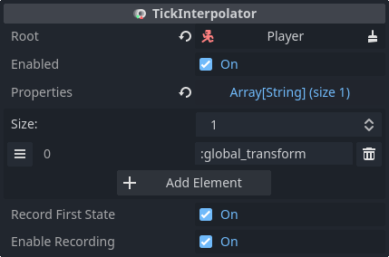

Responsive player movement
To compensate for latency, netfox implements Client-side prediction and Server reconciliation. This documentation also refers to it as rollback.
One use case is player movement - with CSP we don't need to wait for the server's response before the player's avatar can be updated.
Gathering input
For CSP, input is separated from player state. In practice, this means that there's a separate node with its own script that manages input. The job of this script is to manage properties related to input - for example, which direction the player wants to move:
extends Node
class_name PlayerInput
var movement = Vector3.ZERO
These input properties must be updated based on player input. Hook into the network tick loop's before_tick_loop signal to update input properties:
func _ready():
NetworkTime.before_tick_loop.connect(_gather)
func _gather():
if not is_multiplayer_authority():
return
movement = Vector3(
Input.get_axis("move_west", "move_east"),
Input.get_action_strength("move_jump"),
Input.get_axis("move_north", "move_south")
)
It is important to only update input properties if we have authority over the node. Otherwise we would try to change some other player's input with our own actions.
Using BaseNetInput
The same can be accomplished with BaseNetInput, with slightly less code:
extends BaseNetInput
class_name PlayerInput
var movement: Vector3 = Vector3.ZERO
func _gather():
movement = Vector3(
Input.get_axis("move_west", "move_east"),
Input.get_action_strength("move_jump"),
Input.get_axis("move_north", "move_south")
)
Applying movement
The other part of the equation is state. Use the same approach as you would
with your character controller, with the game logic being implemented in
_rollback_tick instead of _process or _physics_process:
extends CharacterBody3D
@export var speed = 4.0
@export var input: PlayerInput
func _rollback_tick(delta, tick, is_fresh):
velocity = input.movement.normalized() * speed
velocity *= NetworkTime.physics_factor
move_and_slide()
Note the usage of physics_factor - this is explained in the caveats.
Configuring rollback
Create a reusable player scene with the following layout:

The root is a CharacterBody3D with the player controller script attached.
The Input child manages player input and has the player input script attached.
The RollbackSynchronizer node manages the rollback logic, making the player motion responsive while also keeping it server-authoritative.
Configure the RollbackSynchronizer with the following input- and state properties:

Ownership
Make sure that all of the player nodes are owned by the server. The exception is the Input node, which must be owned by the player who the avatar belongs to.
After setting ownerships, make sure to call process_settings on
RollbackSynchronizer. This call is necessary after every ownership change.
RollbackSynchronizer sorts properties based on ownership, but this sorting is
only done in process_settings.
For example:
@onready var rollback_synchronizer = $RollbackSynchronizer
var peer_id = 0
func _ready():
# Wait a frame so peer_id is set
await get_tree().process_frame
# Set owner
set_multiplayer_authority(1)
input.set_multiplayer_authority(peer_id)
rollback_synchronizer.process_settings()
Note that peer_id needs to be set from the outside during spawn.
Smooth motion
Currently, state is only updated on network ticks. If the tickrate is less than the FPS the game is running on, motion may get choppy.
Add a TickInterpolator node and configure it with the same state properties as the RollbackSynchronizer:

This will ensure smooth motion, regardless of FPS and tickrate.